java内存区域
运行时数据区域
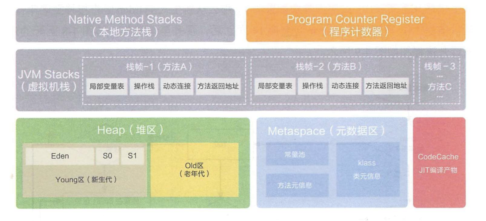
- 程序计数器
当前线程私有
- java虚拟机栈
当前线程私有
- 本地方法栈
虚拟机使用本地方法
- Java heap
对象实例存放的地方
- 方法区
它是各个线程共享的内存区域
JDK8 之前
使用永久代会导致如果类及方法信息如果增加
为什么要使用元空间取代永久代的实现
- 字符串存在永久代中
， 。 - 类及方法的信息等比较难确定其大小
， ， ， 。 - 永久代会为 GC 带来不必要的复杂度
， 。 - 将 HotSpot 与 JRockit 合二为一
。
- 运行时常量池
运行时常量池是方法区的一部分
- 直接内存
直接内存并不是虚拟机运行时数据区的一部分
比如NIO
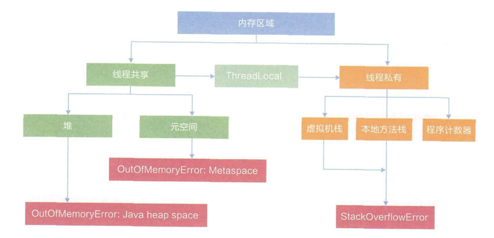
- OutOfMemory
-
堆内存异常
-
虚拟机栈异常
-
本地方法栈
public void stackLeak() { stackLeak(); } -
方法区和运行时常量池溢出
String::intern 是一个本地方法， ， ， ， ， 。
Java里面的String对象到底神奇在什么地方- 运行时常量池溢出
int i = 0; List<String> strList = new ArrayList<>(); while(true){ strList.add(String.valueOf(i++).intern()); }- 方法区溢出
使用动态代理， ， ， ， public class RuntimeConstantPoolOOM { static class OOMObject { } public static void main(String[] args) throws NoSuchMethodException, InvocationTargetException, IllegalAccessException { while (true) { Enhancer enhancer = new Enhancer(); enhancer.setSuperclass(OOMObject.class); enhancer.setUseCache(false); enhancer.setCallback(new MethodInterceptor() { @Override public Object intercept(Object o, Method method, Object[] objects, MethodProxy methodProxy) throws Throwable { return methodProxy.invokeSuper(o, args); } }); enhancer.create(); } } }
在经常运行时生成大量动态类的应用场景中
- 可以设定元空间最大值
： - 设定元空间初始空间大小
：
以上代码虽然创建的临时对象应该被回收
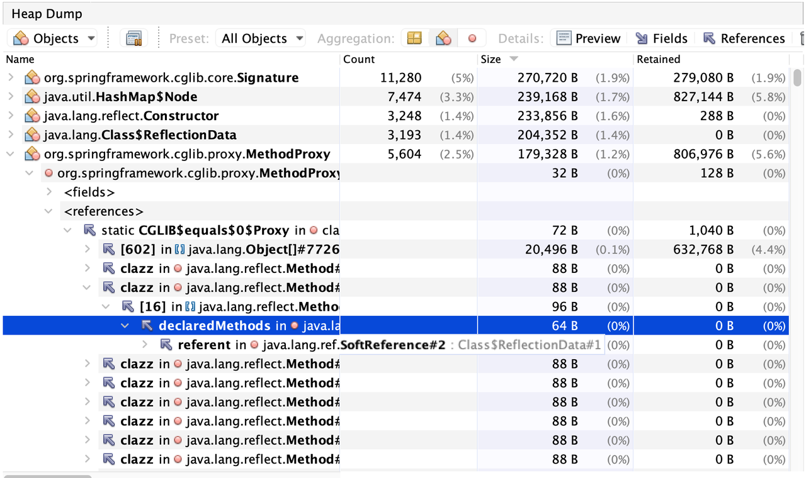
shallow size and retained size
- Dominator by retain size
这里有个对Dominator tree更加直观的描述支配树体现了对象实例间的支配关系
- 对象A的子树
（ ） ， 。 - 如果对象A支配对象B
， 。 - 支配树的边与对象引用图的边不直接对应
。
如下图所示:左图表示对象引用图， 。 ， ， ， ， 。 ， ， ， 。 ， ， ， ， ， 。
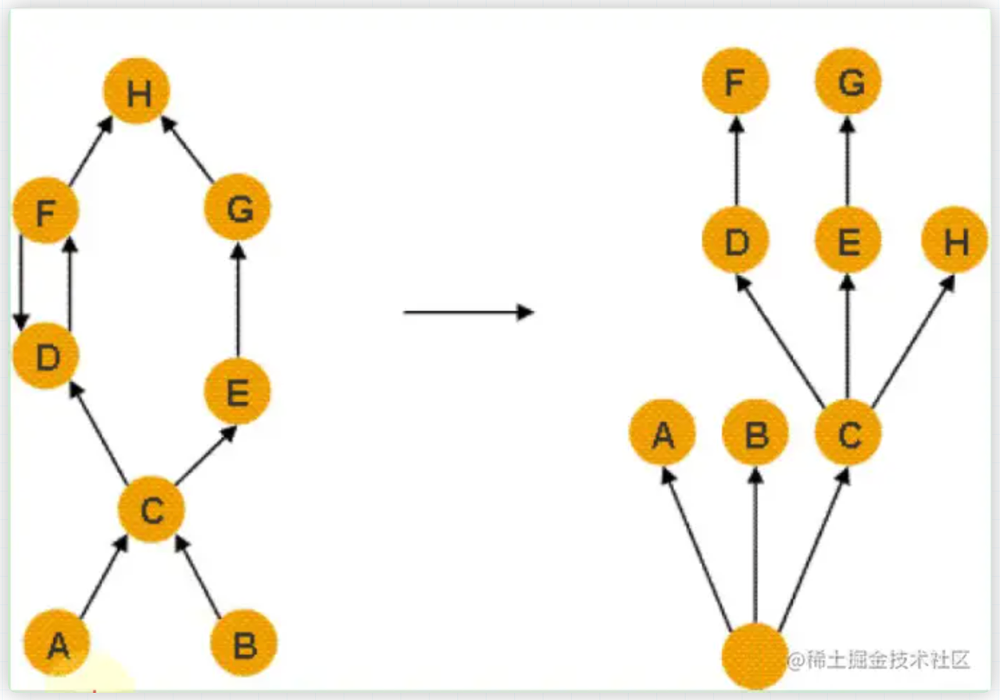
- 本机直接内存溢出
直接内存的容量大小可通过-XX:MaxDirectMemorySize参数来指定
private static final int _1MB = 1024 * 1024;
public static void directMemoryOOM() throws IllegalAccessException {
Field unsafeField = Unsafe.class.getDeclaredFields()[0];
unsafeField.setAccessible(true);
Unsafe unsafe = (Unsafe) unsafeField.get(null);
while (true) {
unsafe.allocateMemory(_1MB);
}
}
由直接内存导致的内存溢出
垃圾收集器与内存分配策略
- 可达性分析算法
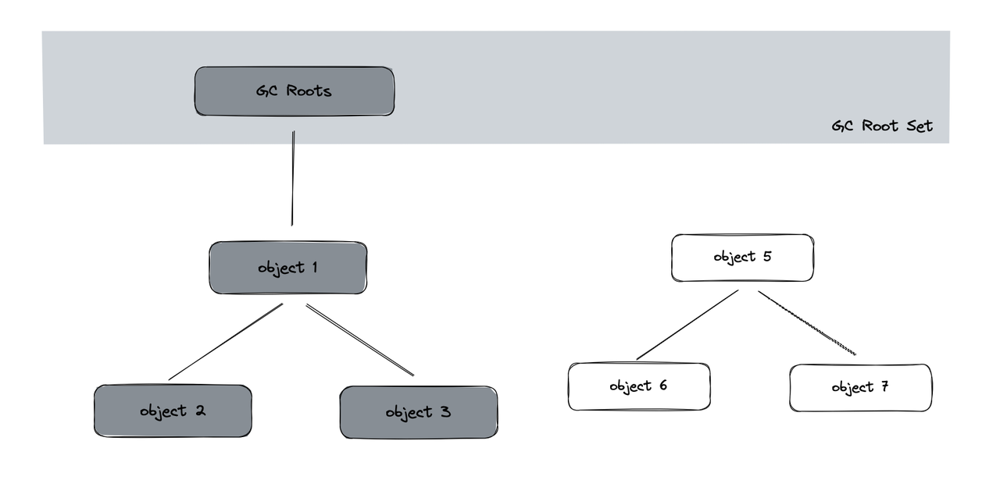
在Java技术体系里
- 在虚拟机栈中引用的对象
， 、 、
public class Test {
}
private void method() {
Integer temp = new Test();
temp = null;
}
temp 作为临时变量<span class="bd-box"><h-char class="bd bd-beg"><h-inner>，</h-inner></h-char></span>引用了new Test(), 从而不会被回收<span class="bd-box"><h-char class="bd bd-beg"><h-inner>，</h-inner></h-char></span>当temp = null 时<span class="bd-box"><h-char class="bd bd-beg"><h-inner>，</h-inner></h-char></span>原来的new Test()就会被回收
- 在方法区中类静态属性引用的对象<span class="bd-box"><h-char class="bd bd-beg"><h-inner>，</h-inner></h-char></span>譬如Java类的引用类型静态变量
public class Test {
p rivate static Test s;
public static void main(String[] args) {
Test temp = new Test();
temp.s = new Test();
temp = null;
}
}
s 作为类的静态属性<span class="bd-box"><h-char class="bd bd-beg"><h-inner>，</h-inner></h-char></span>被赋值new Test();从而这个new Test()不会被回收<span class="bd-box"><h-char class="bd bd-beg"><h-inner>，</h-inner></h-char></span>但是这个temp作为临时变量<span class="bd-box"><h-char class="bd bd-beg"><h-inner>，</h-inner></h-char></span>则它之前被赋值的new test()就会被回收
- 在方法区中常量引用的对象
， public static void main(String[] args) { String s1 = "abc"; String s2 = "abc"; String s3 = "xxx"; }
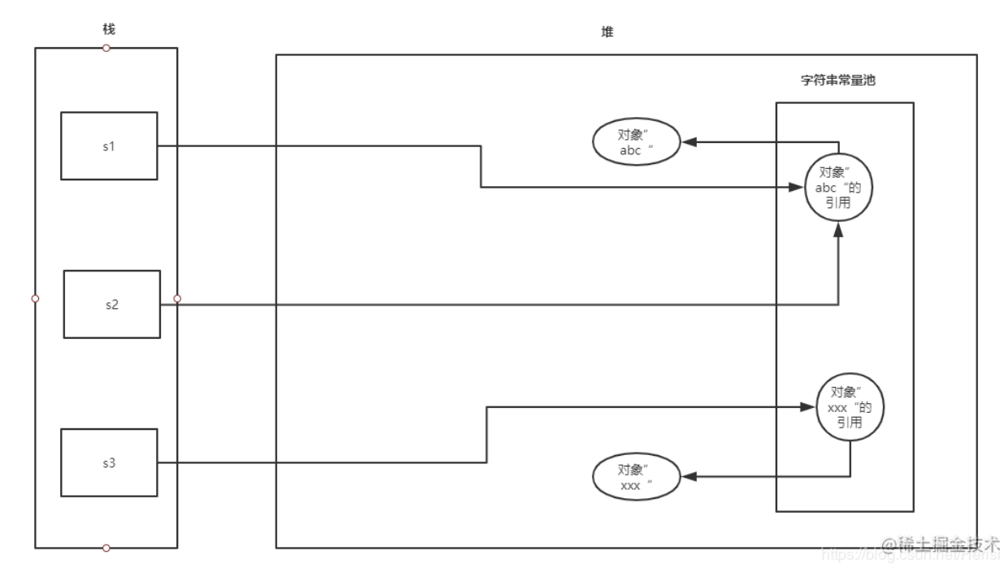
- 在本地方法栈中JNI引用的对象
所谓本地方法就是一个 java 调用非 java 代码的接口
当调用 Java 方法时
- Java虚拟机内部的引用
， ， 、 ， 。 - 所有被同步锁(synchronized关键字)持有的对象
- 反映Java虚拟机内部情况的JMXBean
、 、
除了这些固定的GC Roots集合以外
引用(直观理解)
- 强应用
： ， 。 - 软引用
： ， ， ， ， 。 - 弱引用
： 。 - 虚引用
： ， ， 。 。
分代收集理论
当前的垃圾收集器
- 弱分代假说
： - 强分代假说
：
这两个分代假说共同奠定了多款常用的垃圾收集器的一致设计原则
基础的垃圾回收器
-
标记-清除算法
首先标记出所有需要回收的对象， ， 。
缺点： - 执行效率不稳定
， ， - 内存空间碎片问题
- 执行效率不稳定
-
标记复制算法
为了解决标记-清除算法面对大量可回收对象时执行效率低的问题， ， 。 ， ， 。
IBM有一项研究表明， ， ， ， ， 。 ， ， 。 缺点
： - 如果大量对象存活
， - 内存利用率只有一半
- 如果大量对象存活
-
标记-整理算法
标记-复制算法在对象存活率较高时就要进行较多的复制操作， 。 ， 。
缺点： - 当有大量存活对象时
，
- 当有大量存活对象时
垃圾收集器
-
Serial收集器
单线程工作的收集器， ， ， ， 。
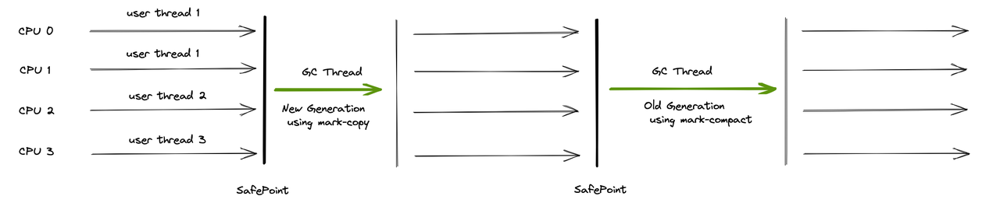
虽然是很早出现的收集器， ， ， ， ； ， ， 。 -
ParNew收集器
ParNew收集器实质上是Serial收集器的多线程并行版本， ， 、 、 、 、 。
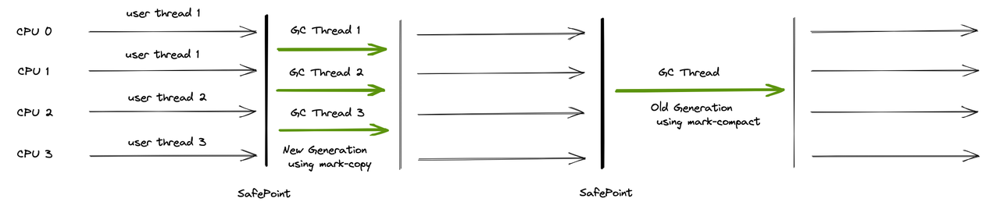
-
Parallel Scavenge 收集器
Parallel Scavenge收集器又称为吞吐量优先收集器， ， 。 。 。
$$吞吐量=\cfrac{运行用户代码时间}{运行用户代码时间+运行垃圾收集时间}$$
高吞吐量就可以最高效率地利用处理器资源， 。 ： ， ， ， ， 。 ， ， ， 。 -
Serial Old收集器

Serial Old收集器是Serial收集器的老年版本 -
Parallel Old收集器
Parallel Old是Parallel Scavenge收集器的老年代版本， ， 。
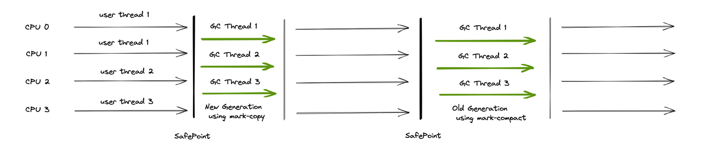
-
CMS收集器
CMS收集器是一种以获取最短回收停顿时间为目标的收集器。 - 初始标记
- 并发标记
- 重新标记
- 并发清除
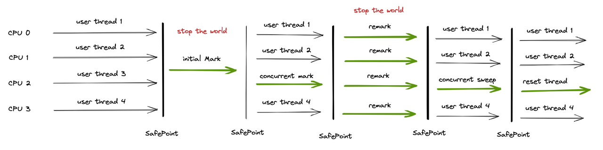
由于是和用户线程一起并发执行
-
Garbage First收集器
（ ）
G1开创的基于Region的堆内存布局能够控制消耗在垃圾收集器上的时间。 ， ， ， ， ， ， ， ， 。 ， ， 、 、 ， 。
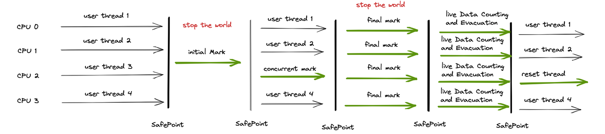
用户可以指定期望的停顿时间， ， 。 ， ， 。
G1是基于标记整理算法的， ， ， 。 -
低延迟收集器
在内存占用， ， ， ， ， ， 。 ： 、 。
GC 日志分析
- GC 日志参数
：
- -verbose:gc :输出gc日志信息
， - -XX:+PrintGC :等同于-verbose:gc表示打开简化的GC日志
- -XX:+PrintGCDetails :在发生垃圾回收时打印内存回收详细的日志并在进程退出- 时输出当前内存各区域分配情况
- -XX:+PrintGCTimeStamps :输出GC发生时的时间戳
- -XX:+PrintGCDateStamps :输出GC发生时的时间戳
（ ， - -XX:+PrintHeapAtGC :每一次GC前和GC后
， - -Xloggc:
:把GC日志写入到一个文件中去 ， - -XX:+TraceClassLoading : 监控类的加载
- -XX:+PrintGCApplicationStoppedTime: 打印GC时线程的停顿时间
- -XX:+PrintGCApplicationConcurrentTime : 垃圾收集之前打印出应用未中- 断的执行时间
- -XX:+PrintReferenceGC : 记录回收了多少种不同引用类型的引用
- -XX:+PrintTenuringDistribution : 让JVM在每次MinorGC后打印出当前使用- 的Survivor中对象的年龄分布
- -XX:+UseGCLogFileRotation : 启用GC日志文件的自动转储
- -XX:NumberOfGClogFiles=1 : GC日志文件的循环数目
- -XX:GCLogFileSize=1M : 控制GC日志文件的大小
- GC 日志分类
针对HotSpot VM的实现， （ ） ， - 部分收集:不是完整收集整个Java堆的垃圾收集
。 - 新生代收集
（ ） （ ） - 老年代收集
（ ） 。 - 目前
， 。 - 注意
， ， 。
- 目前
- 新生代收集
- 混合收集
（ 。 - 目前,只有G1 GC会有这种行为
- 整堆收集
（ 。
- 部分收集:不是完整收集整个Java堆的垃圾收集
GC日志格式的规律一般都是:
- GC前内存占用->GC后内存占用
（ - [PSYoungGen: 5986K->696K(8704K)] 5986K->704K(9216K)
- 中括号内:GC回收前年轻代堆大小
， ， ） - 括号外:GC回收前年轻代和老年代大小
， ，
----------------------Minor GC----------------------------
2021-09-09T14:44:04.813+0800: 0.163:
[GC (Allocation Failure) 2021-09-09T14:44:04.813+0800: 0.163:
[DefNew: 139776K->17472K(157248K), 0.0164545 secs] 139776K->45787K(506816K), 0.0165501 secs]
[Times: user=0.00 sys=0.02, real=0.02 secs] 2021-09-09T14:44:04.853+0800: 0.203:
[GC (Allocation Failure) 2021-09-09T14:44:04.853+0800: 0.203:
[DefNew: 157248K->17471K(157248K), 0.0192998 secs] 185563K->84401K(506816K), 0.0193485 secs]
[Times: user=0.02 sys=0.01, real=0.02 secs]
-----------------------Full GC----------------------------
2021-09-09T14:44:05.240+0800: 0.589:
[GC (Allocation Failure) 2021-09-09T14:44:05.240+0800: 0.589:
[DefNew: 157148K->157148K(157248K), 0.0000289 secs]2021-09-09T14:44:05.240+0800: 0.589:
[Tenured: 341758K->308956K(349568K), 0.0459961 secs] 498907K->308956K(506816K),
[Metaspace: 2608K->2608K(1056768K)], 0.0460956 secs]
[Times: user=0.05 sys=0.00, real=0.05secs]
2021-09-09T14:44:04.813-GC事件开始的时间点
GC - 用来区分Minor GC还是Full GC的标志
DefNew表示垃圾收集器的名称
(157248K) 表示年轻代的总空间大小
139776K->45787K 表示在垃圾收集前后整个堆内存的使用情况
0.0165501 secs - GC事件的持续时间
[Times: user=0.00 sys=0.02, real=0.02 secs] 表示此次GC事件的持续时间
- user
： - sys
： - real
：
前面两个是处理器时间
虚拟机性能监控和故障处理工具
- Jps
可以列出正在运行的虚拟机进程， 。
基本语法为:jps [options] [hostid]- -q:仅仅显示LVMID (local virtual machine id)
， 。 - -1:输出应用程序主类的全类名或如果进程执行的是jar包
， - -m:输出虚拟机进程启动时传递给主类main()的参数
- -v:列出虚拟机进程启动时的JVM参数
。 。 - 说明:以上参数可以综合使用
。
- -q:仅仅显示LVMID (local virtual machine id)
- 虚拟机统计信息监视工具
jstat(VM Statistics Monitoring Tool):用于监视虚拟机各种运行状态信息的命令行工具。 、 、 、 。
-class:显示ClassLoader的相关信息:类的装载、 、 、 - -t
： - -h3
： - 9000
： - 1000
： - 10
：
- -t
垃圾回收相关的:
- -gc:显示与GC相关的堆信息
。 、 、 、 、 、 。 - -gccapacity:显示内容与-gc基本相同
， 、 。 - -gcutil:显示内容与-gc基本相同
， 。 - -gccause:与-gcutil功能一样
， 。 - -gcnew:显示新生代Gc状况
- -gcnewcapacity:显示内容与-gcnew基本相同
， 、 - -geold:显示老年代GC状况
- -gcoldcapacity:显示内容与-gcold基本相同
， 、 - -gcpermcapacity:显示永久代使用到的最大
、 。
- Jmap
：
jmap(JVM Memory Map):作用一方面是获取dump文件（ ， ） ， ， 、 、 。 - jmap [option]
- jmap [option] <executable
- jmap [option] [server_id@]
- jmap [option]
- -dump
： - 特别的: -dump:live只保存堆中的存活对象
- -heap
： ， 、 ， - -histo
： ， 、 - 特别的:-histo:live只统计堆中的存活对象
- -permstat
： - 仅linux/solaris平台有效
- -finalizerinfo
： - 仅linux/solaris平台有效
- -F
： ， - 仅linux/solaris平台有效
- -h |-help
： - -J
：
- Jstack: java 堆栈跟踪工具
生成线程快照的作用:可用于定位线程出现长时间停顿的原因， 、 、 。 。 ， 。
option参数
- -F
： ， - -m
： ， - -h
： ，
- Jcmd
它是一个多功能的工具， 。 、 、 、 、 、
可视化故障处理工具
- JConsole
- VisualVM
Monitor 显示CPU、 、 、 、
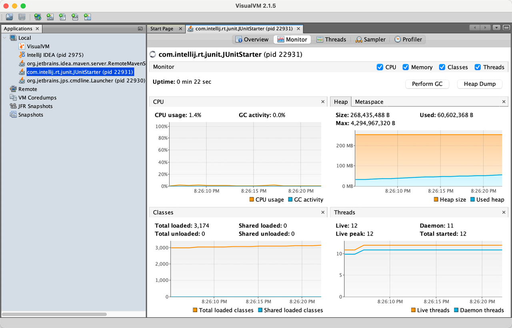
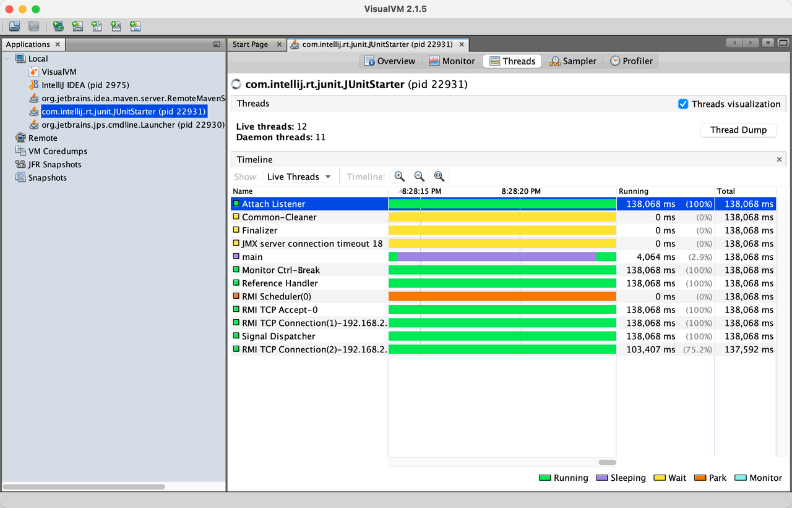
对进程进行heap dump进行分析
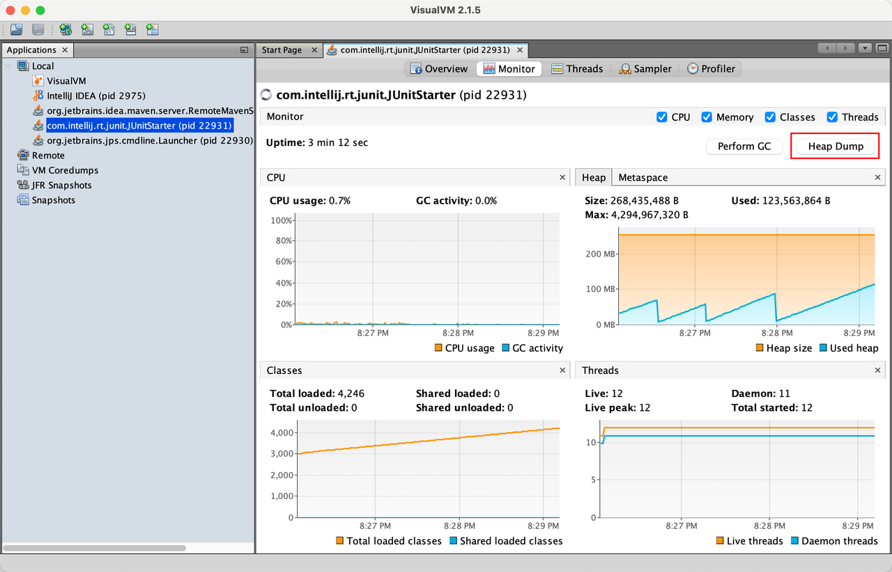
dump的结果可以看到class实例的个数
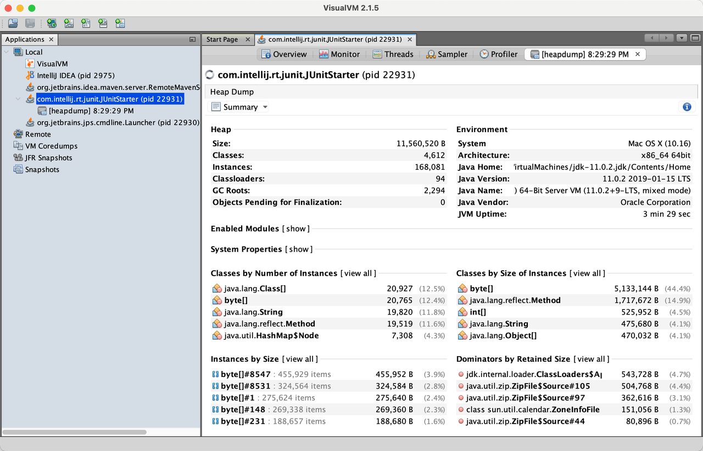
- mat
对Object的引用关系分析更加准确 - Jprofile
判断是不是 GC 引发的问题？
到底是结果
- 时序分析
： ， ， ， （ ） ， ： 。 - 概率分析
： ， ， ， ， ： 。 - 实验分析
： ， （ ） ， ， ， ： 。 - 反证分析
： ， ， ， ， ： 。
不同的根因， 。 、 、 ， ， ， 。
总结
我们可以根据进程的内存使用特点
在分析是不是GC导致应用出现问题时
Reference: